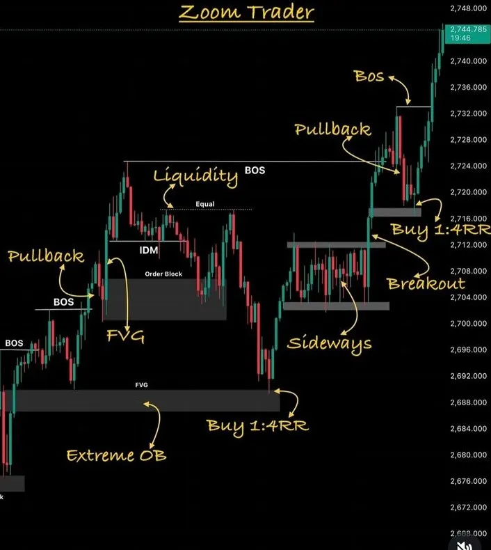
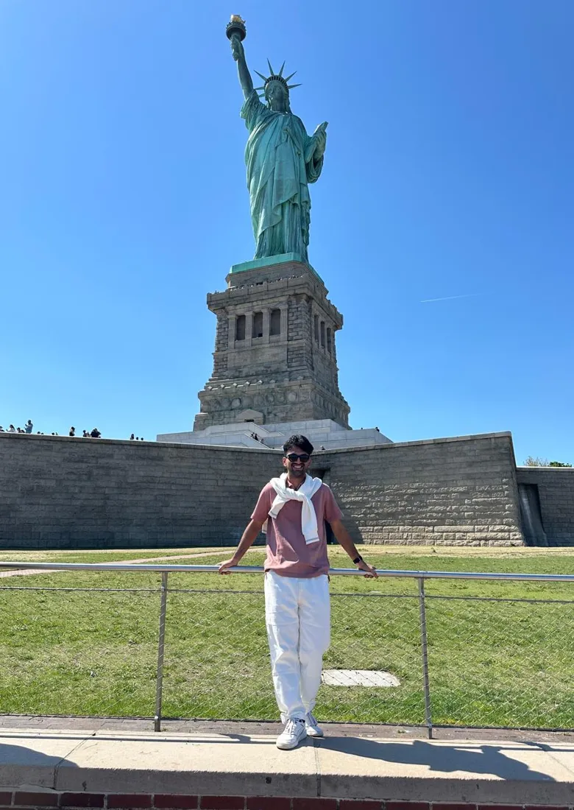
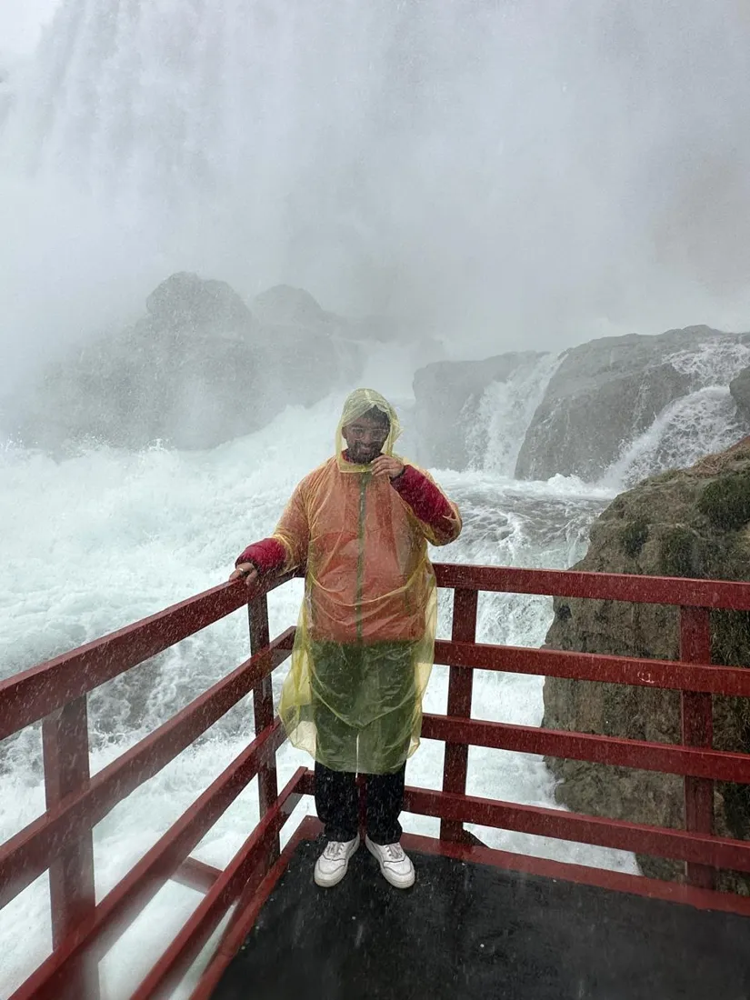
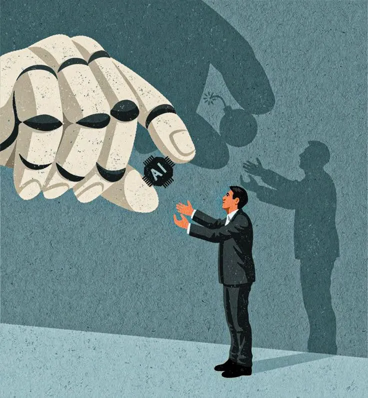
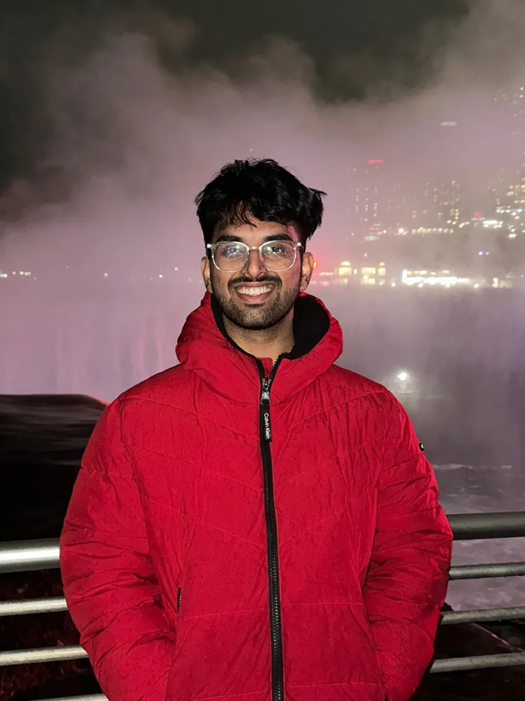
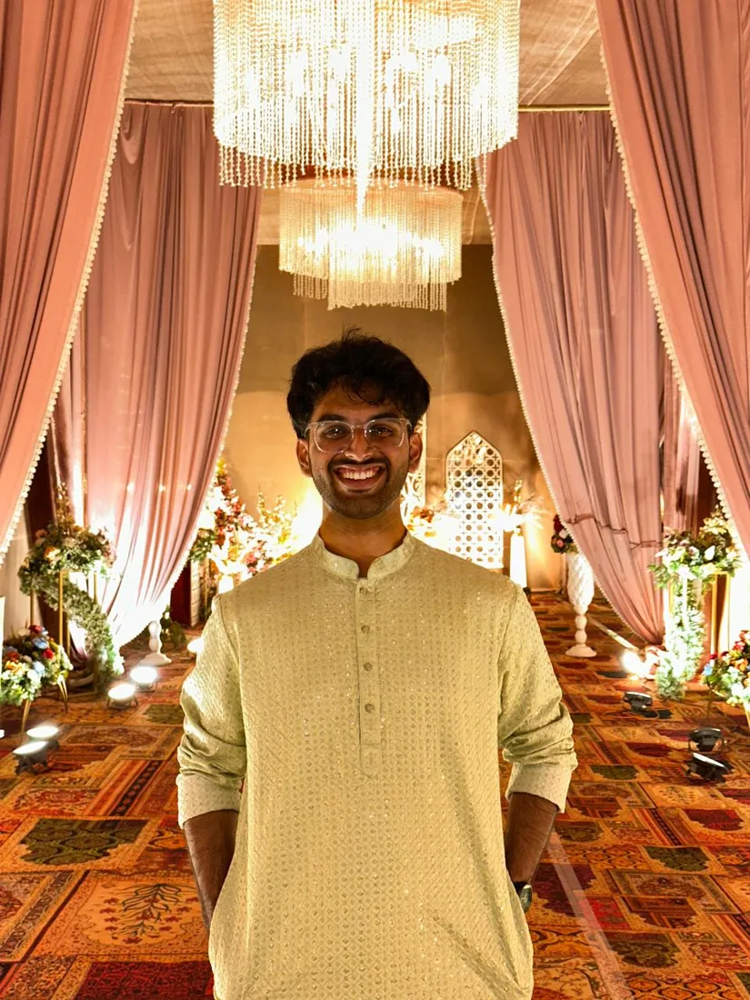

Models that think. Systems that care.
I'm Aadish Bane, an AI/ML engineer building LLM systems, agentic AI and speech models. Final-year ECE at SVNIT Surat.
◎
LLM Routing70.8% cheaper calls

✺
Speech AIEmotion from voice

⌘
AgentsPlan, act, verify

⚖
Responsible AIFair by design

Turn data into decisions.
Models, agents and the systems around them.


+Ideas, shipped end to end.
From notebook to FastAPI to dashboard.
Interned at ADNOC &
Deevelo X.
ADDXSV+
✦
Less hype.
More signal.
Python✦LLMs & GenAI✦PyTorch✦Agentic workflows✦FastAPI✦Speech & audio ML✦scikit-learn✦Responsible AI✦Docker✦Prompt engineering✦Streamlit✦LLM eval✦
01 About
I like the part of AI that happens after the demo: making models cheaper to run, safer to trust and clear enough to explain. I'm studying Electronics & Communication at SVNIT, and I spend most evenings building LLM routers, speech emotion models and agentic tools that hold up outside a notebook.
0simulated LLM cost cut from smart routing
0coarse emotion accuracy from speech (ARCA-Net)
0documents generated by my Mixtral app
0models from 6 providers behind one router
02 Selected work (06)
0106
Scroll to spin · click a card to open
03 Experience & education
Where I've been learning by building.
-
Dec 2025 – Jan 2026
AI Intern · Abu Dhabi National Oil Company (ADNOC)
Abu Dhabi, UAE
- Designed PLC ladder logic and wrote PLC code for industrial control workflows on live, SCADA-integrated systems.
- Mapped how AI/ML models could plug into PLC-based control, and assessed the feasibility of AI-driven automation inside existing SCADA/DCS infrastructure.
- Reviewed AI adoption opportunities across SCADA, PLC and DCS systems and presented recommendations on efficiency gains from AI-based monitoring.
-
May 2025 – Jul 2025
AI/ML Intern · Deevelo X
Remote
- Built an LLM-powered document generator on Mixtral-8x7B with speech-to-text and text-to-speech, category and urgency classification, and automatic formal PDF output. It has produced 1,000+ documents.
- Designed prompt templates and a classification layer that adapt the output to each real-world scenario, improving relevance over a single-prompt baseline.
- Trained supervised models on 10,000+ sample datasets, improved them with feature engineering, and validated with cross-validation and GridSearchCV.
-
2023 – 2027
B.Tech, Electronics & Communication · SVNIT Surat
Gujarat, India
- Coursework: Machine Learning, Generative AI, Responsible AI, Speech Processing, Data Structures & Algorithms, Probability & Statistics.
Off the clock
Build. Explore. Repeat.
When I'm not training models I'm chasing waterfalls, climbing ridgelines, celebrating with family, or on the track with my team.
04 Contact
Let's build something
thoughtful.
Open to AI/ML engineering roles and internships. The fastest way to reach me is email.